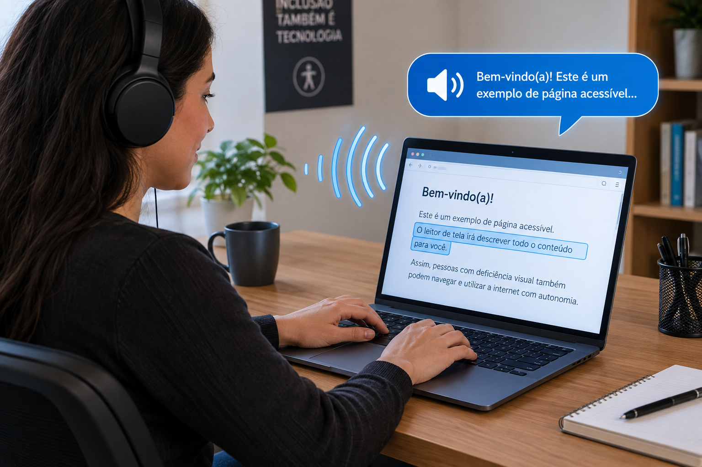

O que é acessibilidade digital?
A acessibilidade digital permite que diferentes pessoas utilizem sites, aplicativos e computadores de forma mais independente, inclusive pessoas com deficiência.
Um exemplo é o leitor de tela, que transforma as informações exibidas no computador em áudio, permitindo que a pessoa navegue e tenha acesso ao conteúdo.
Acessibilidade não é privilégio. É acesso.